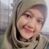

| Profil |  |
|---|---|
| Nama |
SHIBAA AZMI FARROS ALTHOOF |
| Domisili | Ambarawa, Jawa Tengah |
|
shibaaazmi@gmail.com 111202012662@mhs.dinus.ac.id |
Saya merupakan mahasiswi aktif dari Fakultas Ilmu Komputer, Prodi Teknik Informatika Universitas Dian Nuswantoro Semarang. Saya mampu berkerja secara individu maupun tim, dapat berkomunikasi dengan baik, bertanggung jawab atas tugas yang diberikan, berkeinginan untuk belajar.
Selain kuliah saya juga aktif mengikuti kegiatan dalam dan luar kampus seperti pelatihan dan organisasi untuk mendukung skill saya dalam bidang pemrograman, menambah pengalaman, menjalin relasi dan membangun komunikasi.